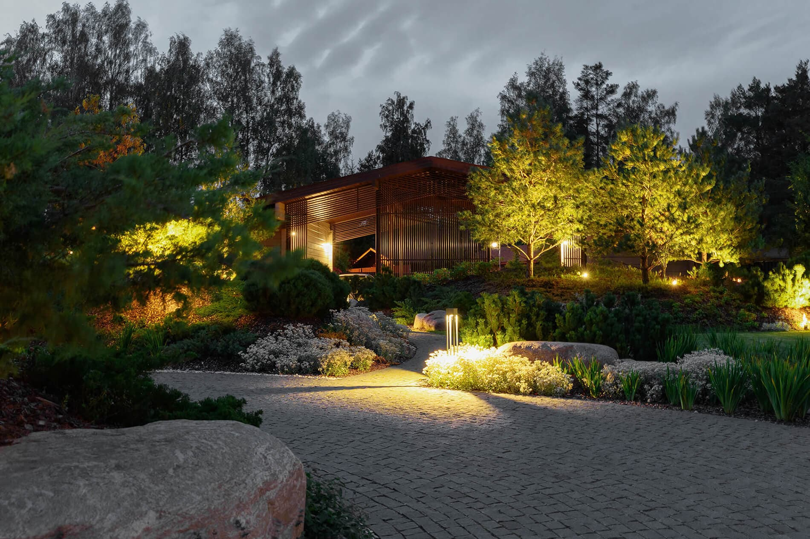

премиальные сады минимального ухода
многократные призёры знаковых российских и международных премий
DEREVO PARK
— студия ландшафтного дизайна, организованная Андреем Кочетковым в 2009г. Наша компания — это история про творчество, любовь к своему делу, креативный подход, стремление к красоте и ответственность. DEREVO PARK по праву считается одной из лучших ландшафтных студий России.
наши проекты
Награды
Победители и призеры национальной премии по ландшафтному дизайну 2016-2021. Обладатели гран-при и золотого диплома международного фестиваля "Цветочный джем. Летние сады Москвы" 2019. Лауреаты 1 и 2 степени в номинации "Малые сады" в конкурсе "Дом на Брестской" 2020. 1 место "Золотой Трезини" 2020. Призеры "ADD Awards" 2017, 2018, 2019

блог
РАСТЕНИЯ И КЛИМАТ.
ЧТО ВЫБРАТЬ ДЛЯ УЧАСТКА?